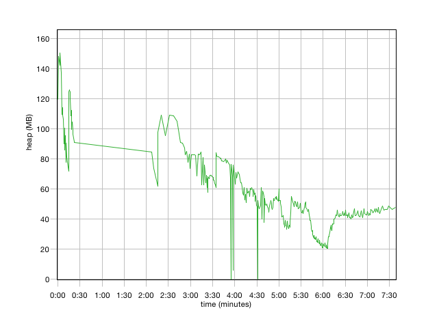
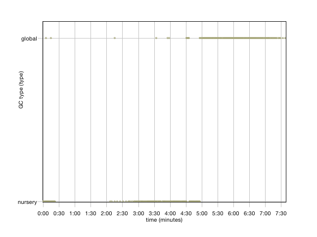
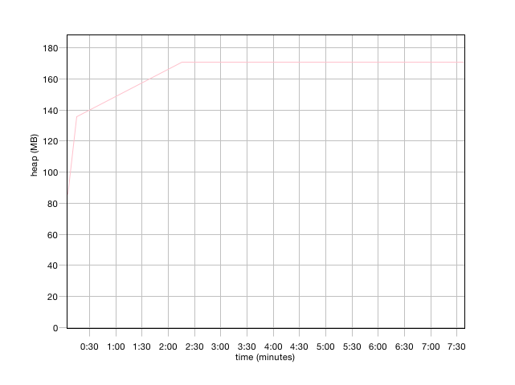
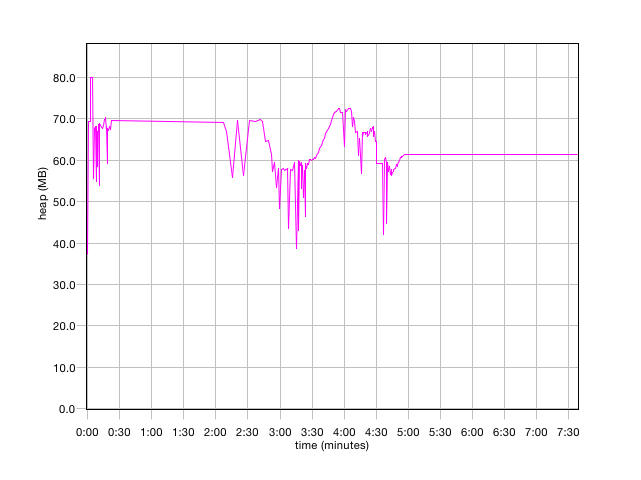
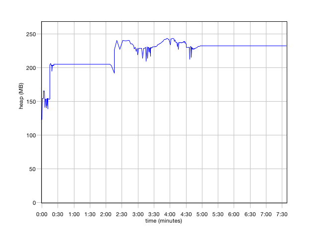

Version
Solaris JVM
Source name
gc.log
Summary
| Forced collection count | 1 |
| Full collections | 185 |
| Mean garbage collection pause (ms) | 454 |
| Mean interval between collections (ms) | 2463 |
| Number of collections triggered by allocation failure | 164 |
| Proportion of time spent in garbage collection pauses (%) | 19.31 |
| Proportion of time spent unpaused (%) | 80.69 |
| Rate of garbage collection (MB/minutes) | 1494 |
Free heap (after collection)
| Mean | Minimum | Maximum |
| heap (MB) | heap (MB) | heap (MB) |
| 56.5 | 0.02 | 151 |

GC type
| type | global | nursery |
| Total Instances | 186 | 164 |

Tenured heap size
| Mean | Minimum | Maximum |
| heap (MB) | heap (MB) | heap (MB) |
| 170 | 85.4 | 171 |

Nursery size
| Mean | Minimum | Maximum |
| heap (MB) | heap (MB) | heap (MB) |
| 62.1 | 37.3 | 80.0 |

Pause time
| Mean | Minimum | Maximum | Total |
| time (ms) | time (ms) | time (ms) | time (ms) |
| 253 | 4.24 | 558 | 88533 |

Heap size
| Mean | Minimum | Maximum |
| heap (MB) | heap (MB) | heap (MB) |
| 226 | 123 | 243 |
